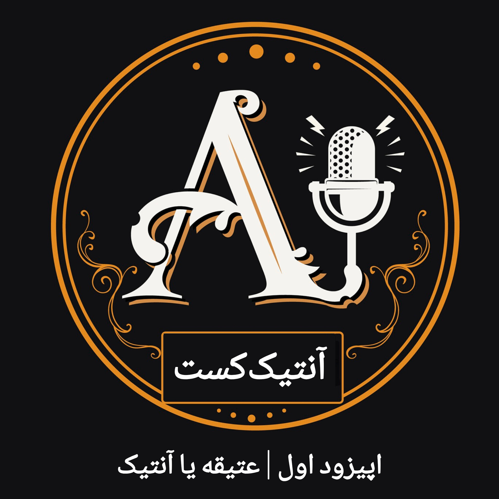

عتیقه یا آنتیک؟
وقتی درباره اشیای قدیمی صحبت میکنیم، دو واژه «عتیقه» و «آنتیک» را زیاد میشنویم. اما آیا این دو واژه واقعاً یک معنی دارند؟

درباره این قسمت
در اولین قسمت آنتیککست سراغ یکی از پایهایترین پرسشها در دنیای اشیای قدیمی میرویم: وقتی میگوییم یک شیء «آنتیک» است، دقیقاً درباره چه چیزی صحبت میکنیم؟
واژههایی مانند عتیقه، آنتیک، قدیمی و حتی زیرخاکی در بازار و میان مردم استفاده میشوند، اما همیشه معنای یکسانی ندارند. شناخت درست این واژهها میتواند نقطه شروع خوبی برای ورود به دنیای آنتیک باشد.
در این قسمت میشنوید
تفاوت میان عتیقه و آنتیک، معنای این واژهها، نگاه بازار به اشیای قدیمی و اینکه چرا شناخت اصطلاحات در خرید و فروش اشیای قدیمی اهمیت دارد.